New Consultation
A new consultation can be created from the patient dashboard by clicking the 'Open New Encounter' option. There are 4 ways in which you can create the consultation chart.
- Quick
- Brief
- Comprehensive
- SOAP Template
Quick Consultation
To create a 'Quick Encounter' follow the steps given below.
- Go to 'Patients' tab
- Select the patient and go to the patient dashboard.
- Click on 'Open New Encounter' link.
- A window will appear on the screen asking to select the type of consultation.
- Select 'Quick' option to open the 'Quick Encounter' page.
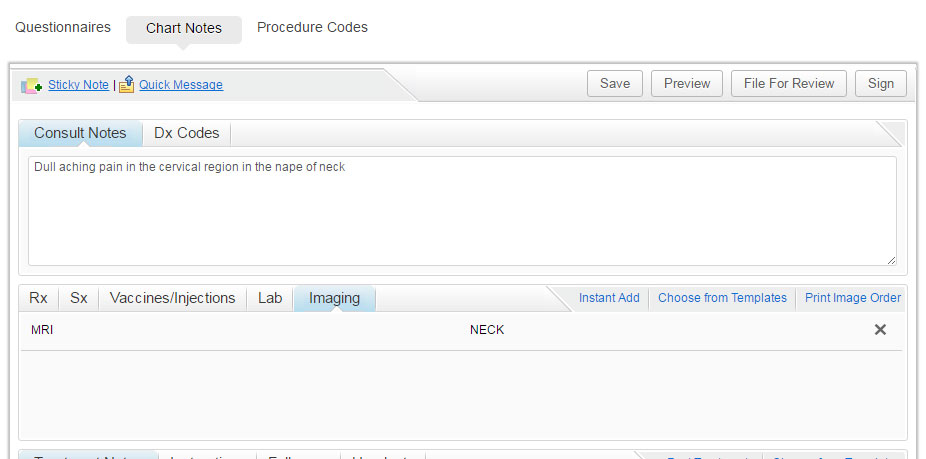
- Once you finish charting, click on 'Sign' to sign the chart note.
Brief Consultation
To create a 'Brief Encounter' follow the steps given below.
- Go to 'Patients' tab
- Select the patient and go to the patient dashboard.
- Click on 'Open New Encounter' link.
- A window will appear on the screen asking to select the type of consultation.
- Select 'Brief' option.
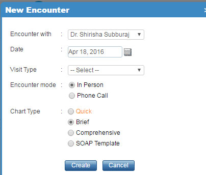
- Click on 'Create' to continue with the brief consultation.
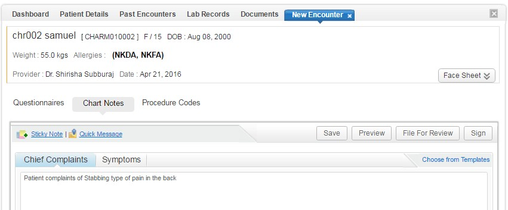
- Once you finish charting, click on 'Sign' to sign the chart note.
Comprehensive Consultation
- Go to 'Patients' tab
- Select the patient and go to the patient dashboard.
- Click on 'Open New Encounter' link.
- A window will appear on the screen asking to select the type of consultation.
- Select 'Comprehensive' option.
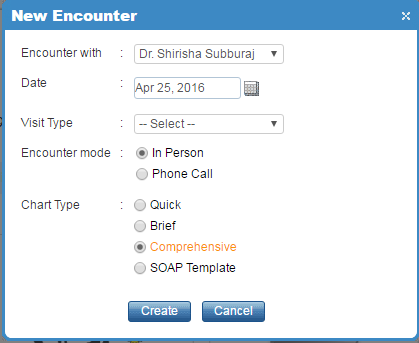
- Click on 'Physician Notes' option to enter detailed notes about the patient.
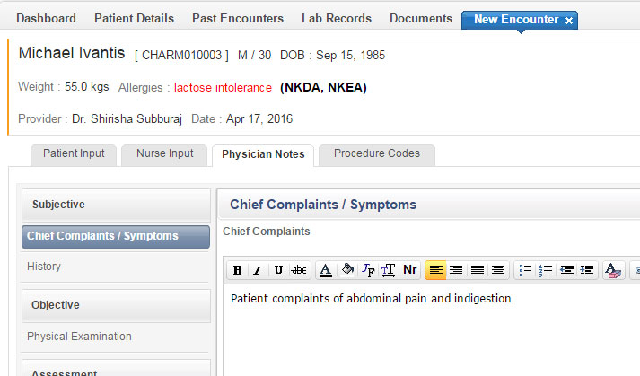
- Once you finish charting, click on 'Sign' to sign the chart note.
SOAP Template Consultation
- Go to 'Patients' tab
- Select the patient and go to the patient dashboard.
- Click on 'Open New Encounter' link.
- A window will appear on the screen asking to select the type of consultation.
- Select 'SOAP Template' option.
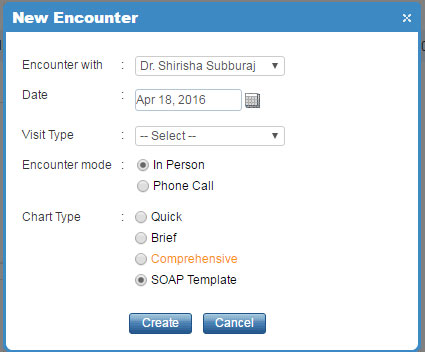
- Choose the name of the SOAP template. Once the template gets loaded in the chart, you can enter the notes about the patient.
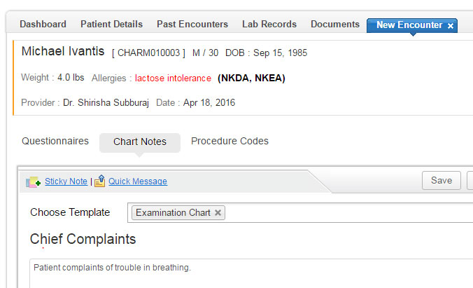
- Once you finish charting, click on 'Sign' to sign the chart note.
File for Review
- Go to 'Patients' tab and select the patient.
- Select 'Old Encounter' or 'Open Unfinished Encounter'.
- Scroll to the bottom of the chart and click on 'File for Review' option.
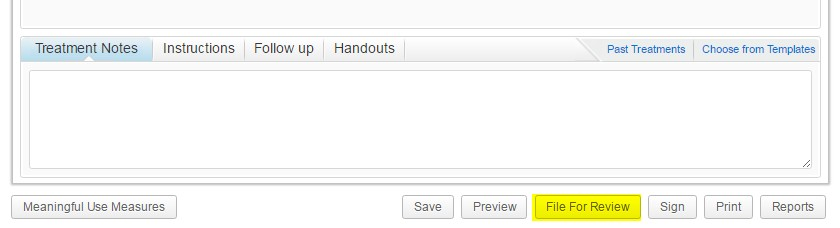
- A popup will open asking you to choose a physician's name to whom you want to file the chart note for review.
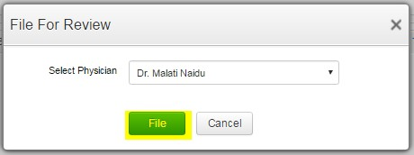
- Select the physician name and click on 'File' to file the chart for review.
Review Charts
- Go to 'Home' tab and click on 'Review Chart' icon. The following screen opens up.
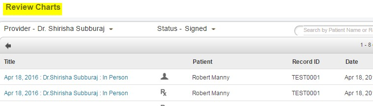
- Select a chart note to review its content. Once you have review, click on 'Sign' to finalize the chart note.
Generate Referral Letters
- Go to 'Patients' tab and click on the chart note. Scroll down to the end of the note and click on 'Reports' link.
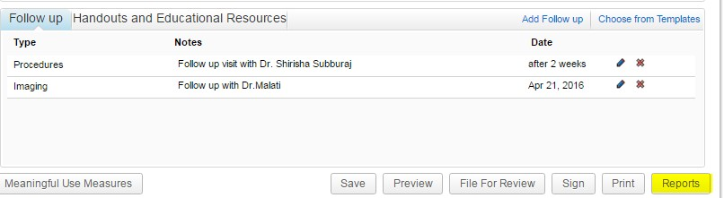
- Choose a referral template and click on 'Generate' to generate the referral letter.
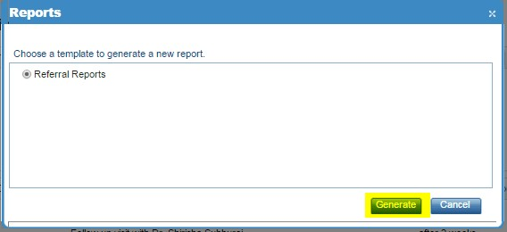
- Referral letter will open up with the medical condition of the patient. If you wish to edit the referral report, you can use the 'Pencil' icon.
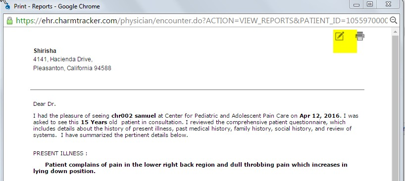
- You can print the referral letter by clicking the 'Printer' icon.
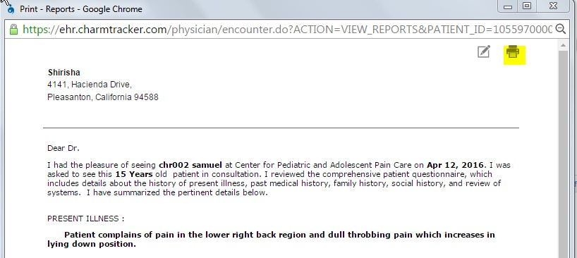
Add Followup Appointments
Followup appointments for the patients can be created at the end of the consultation by following the steps given below.
- Open the chart note and scroll down to the end of the note and click on 'Add Follow up' link.
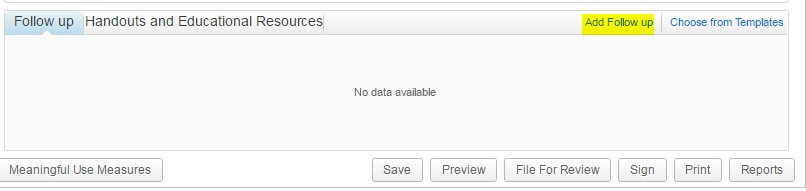
- Recommend the type of followup, viz., Office Visit, Lab Test, Procedures, etc., and add a date. Click on 'Add' to add the followup to the chart note.
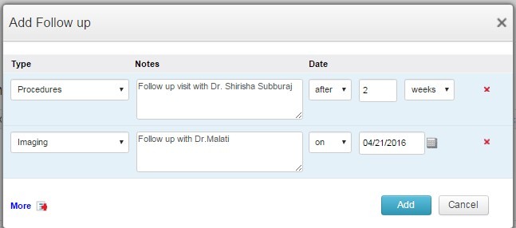
- On configuring this, reminders will be sent to the patients about the follow up visits.